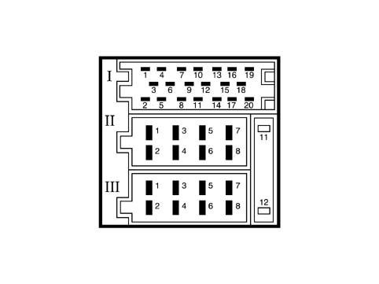
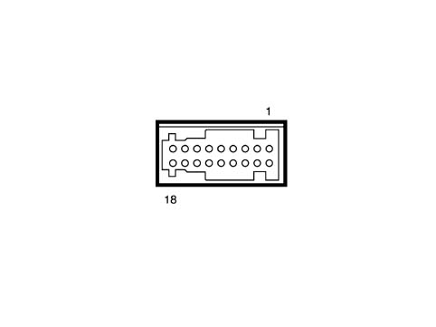

5550DB REVERSE GEAR ENGAGED SIGNAL CHECK
- Path
- Test > 55 ELECTRICAL EQUIPMENT > 5550 WARNING AND MANOEUVRING INDICATORS > 5550D BRAKE AND REVERSING LIGHTS > 5550DB REVERSE GEAR ENGAGED SIGNAL CHECK
- Kind
- test / check procedure
- Applies to
- all engines; all production periods
- Interactive page
- https://sloeber94.github.io/elrnDB-fPnd/en/#/169001236
Applies to: all engines; all production periods
- Turn the ignition key to the ON position.
- Engage reverse gear.
- Position the red probe of the voltmeter at pin 3 of the 18-way Connect connector and the negative to earth.
- Check that there is a 12 Volt voltage present.


Connect pin out